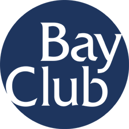

The Bay Club | Operations Intern | San Francisco, CA
–
- Analyzed core business and operating metrics, including club usage, membership dues, revenue, capital investment, PIF waterfall, preliminary financial results, and EBITDA
- Planned and executed a community group exercise event with a team of interns, coordinating programming and on-site execution
- Developed a cross-functional understanding of operations through rotations across sales, aquatics, fitness, recovery, front desk, housekeeping, food & beverage, and youth programming
- Completed the Bay Club Leadership Fundamentals and Leadership Essentials Programs
- Learned how operating performance informs organic growth, acquisitions, construction and development, and potential-market evaluation
- Gained exposure to Data and IT functions and learned how analytics support membership churn prediction, M&A evaluation, and potential-market analysis
- Earned CPR Pro and Lifeguard certifications